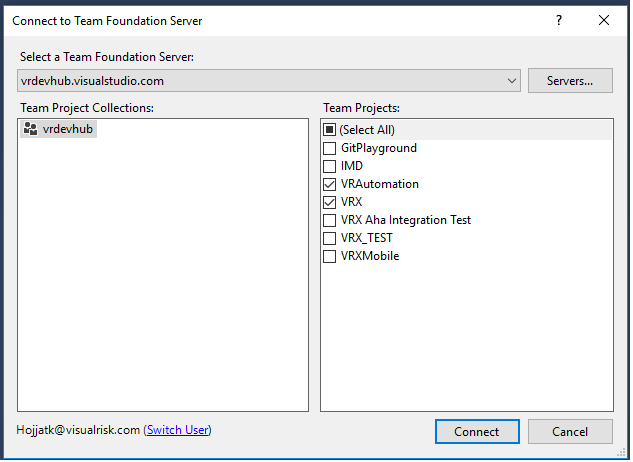

GIT
Visual Studio Team Services
2018
Git Intro
What is Git?
“Git is a Distributed Version Control System”
-
Ideas behind DVCS
- Everybody has a complete version of repositories, hence everybody has a backup.
- You can work offline and later on can move changes to a remote repository.
- Performing actions other than pushing and pulling change-sets are extremely fast.
-
Branching is Cheap
- A branch in git is simply a lightweight movable pointer to one of commits.
-
Our reasons from changing from TFVC to GIT
- Industry standard.
- Easier Branching model.
- More flexible in terms of code freeze and development workflow.
How GIT Works?
- Create a git repository via command line.
- How to share your code to others?
- How to clone a repository?
Create a git repository in command line.
$ mkdir myrepo
$ cd myrepo
$ git init
$ git status
>// Create a new file
$ git status
$ git add
$ git status
$ git commit -m "initial checkin"
$ git status
$ git log
>// Make changes to exiting file & and a new file
$ git status
$ git add {new-file}
$ git status
$ git commit -m "added new-file"
$ git log
How to share your code to others?
> github: // Login
> github: // Create a new repository
$ git remote add origin https://github.com/repository/myrepo.git
$ git remote -v
$ git push -u origin master
> github: // Make changes on a file on server
$ git fetch origin master
$ git merge origin/master
>// You can do git pull master as well
How to clone a repository?
$ git clone https://github.com/repository/myrepo.git
$ git add
$ git commit
$ git push origin master
Git Terminologies
- Origin,Remote,Upstream:
- Repository: A collection of commits, and branches and tags to identify commits.
- Branch: A branch represents an independent line of development.
- Checkout: Switch branches or restore working tree files.
- Staging: Prepare files finely for a commit.
- Commit/Amend: Takes the staged snapshot and commits it to the project history.
- Fetch: It downloads a branch from a remote repository.
- Pull: It downloads a branch from a remote repository, then immediately merges it into the current branch.
- Push: It lets you move a local branch to another repository, which serves as a convenient way to publish contributions.
- Merge: Integrate changes from divergent branches.
- Rebase: Rebasing lets you move branches around, which helps you avoid unnecessary merge commits. The resulting linear history is often much easier to understand and explore.
- Tag: A reference typically used to mark a particular point in the commit chain.
- Pull Request: Pull requests are a feature that makes it easier for developers to collaborate.
- Stash: temporarily shelves (or stashes) changes you've made to your working copy.
- Reset: Undoes changes to files in the working directory.
- Revert: Undoes a committed snapshot.
- Clean: Removes untracked files from the working directory.
How Git works in Visual Studio?
- Demo With GitHub
-
Let's talk about branches
- master branch is the main branch by default.
- The process of merging a feature branch to a main branch (master/dev) is called a “Pull Request”.
Demo With GitHub
> // Launch Visual Studio
> VS: Click create a repo under github
> VS: Create a new solution/project
> VS: Change some files and "Commit all"
> VS: navigate to branches and "Push"
> VS: view history
> GitHub: edit file directly in github
> VS: "Fetch" master branch
> VS: navigate to branched and "Pull"
> VS: change files
> VS: navigate branches and "Push"
How Git works in VSTS?
-
Setup git in VS to work with VSTS https://vrdevhub.visualstudio.com 
- Git workflow Demo
-
Git branches Demo
- What is a "Pull Request"?
- What happens if there is a conflict?
- What are out main branches: dev, master
- What is a branch policy?
Git workflow Demo
> VSTS: Login
> VSTS: create a new project
> VS: navigate to Team Explorer
> Manage Connections -> Connect to
> VS: clone the repository
> VS: create a new project
> VS: Commit
> VS: Push
> VSTS: navigate to Code & History
> VSTS: edit the file directly and Commit
> VS: Pull
> VS: do some changes
> VS: Commit
> VS: Push
> VSTS: Refresh
Git branches Demo
> VS: Create a new branch named feature1
> VS: Do some changes
> VS: Commit
> VS: Push
> VSTS: refresh
> VS: navigate to Pull Request and create a new Pull Request
> VSTS: determine the reviewer and create the Pull Request
> VSTS: you can Complete, Reject
> VS: Switch to master branch
> VS: Pull the changes down
> //-----
> VS: create a new feature branch named feature2
> VS: do some changes that has conflict
> VS: Commit
> VS: Push the branch
> VSTS: create a new Pull Request // this will fail
> VS: Switch to master
> VS: Fetch the master
> VS: merge from origin/master to feature2 // this will fail
> VS: resolve the conflict
> VS: Commit
> VS: Push
> VSTS: Reactivate the pull request that can be completed now
> VS: Wwitch to master and Pull from remote master
Git Workflow
- VRX Projects in VSTS
-
How our git workflow works?
- Pull changes from origin
- Create local feature branches per work item or feature
- Commit/Commint and Push feature branch to origin (if needed to be shared)
- Merge (from dev to feature branch)
- Pull request
- Sync
- Delete your local feature branch if not required
- $git config remote.origin.prune true
Naming convention for feature branches:
{username}/{workitem-id}-{something meaningful}
e.g: ciarano/23076-hybrid-logout
How our build process works?
- Cannot merge to deb branch until all tests passed
- Cannot force push
- Must be a pull request (no direct push)
- Must be code reviewed
- QA, UAT, Release and TestBed (e.g. hybrid)
Typical Use-Cases
- Undoing local changes? reset & checkout & clean
- How about shelfset? temporarly branches or stash
- How about gated-checkin? branch policy
- Deleting remote branches on pull request completion? it depends
- Clearing up local branches that no longer needed? Good practice
- Can I use Rebase? No, please.
- Can I use Squash? No, please.
- Atomic Commit? Good practice.
Tooling
 GitBash:
GitBash:  GitKraken:
GitKraken:  VS Code:
VS Code:
SourceTree, TortoiseGit, etc.
Resources
-
Git Fundamentals
-
Git Glossary
https://www.atlassian.com/git/glossary
-
Git Terminology
https://www.atlassian.com/git/glossary/terminology
Practice makes perfect
- Go throught Scenarios given in this presentation and practice them
-
Play with VSTS
- Login to vsts
- clone the test project
- create a feature branch
- do some changes
- create a pull request and send it for review
- sync